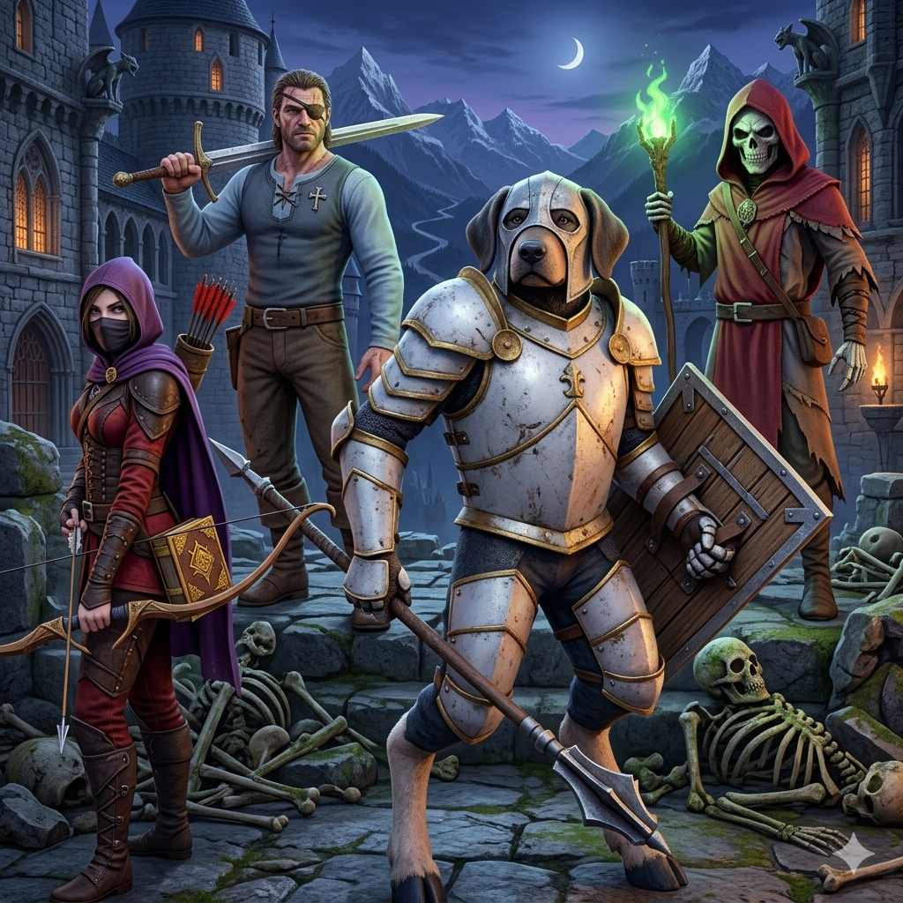
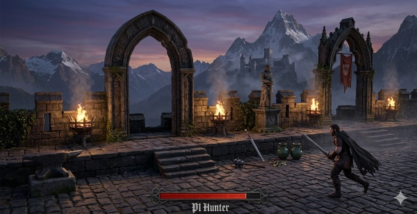
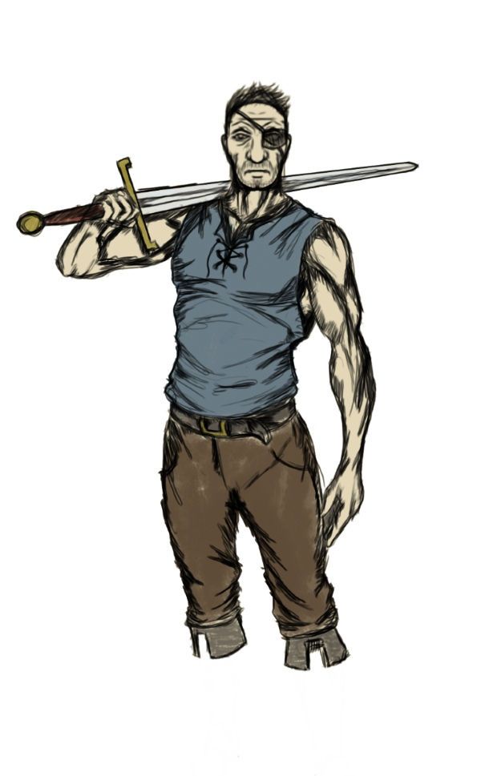
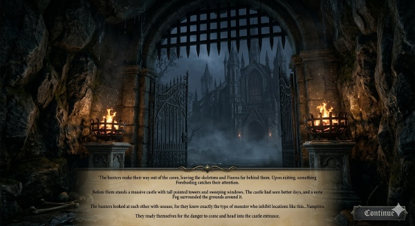

Game Overview

The Story
In the height of the Transylvania era, four unlikely monster hunters — a hardened Soldier, a cunning Stalker, a Wardog-Human hybrid, and a brilliant Alchemist — are dispatched by the League of Monster Hunters to bring down Dracula, the leader of the vampire. What starts as a hunt quickly spirals into something much larger and far more malevolent than anything our hunters bargained for.
Two Little Wounds blends dark fantasy lore with wit, clever bosses, and chaotic situations. The world is filled with monsters, demons, and creatures — each with their own place in the lore of this universe.
Gameplay
A 3D action-adventure brawler inspired by RPG-style combat depth and dungeon-crawler style progression, with the co-op flow of classic arcade games but built for a modern audience with fluid, responsive mechanics.
Screenshots & Concept Art



Development Story
From 2D Demo to 3D Universe
Two Little Wounds began as a 2D pixel-based hack & slash demo, which was released publicly and gathered meaningful feedback that pointed toward a bigger, more immersive vision. Based on that feedback, the project pivoted to a fully realized 3D dungeon-crawler with the same four heroes, the same story, and a game universe deep enough to support sequels, animated series, and eventually film.
Currently in pre-production, Two Little Wounds is being built with a complete World Bible — covering the history of Transylvania, the League of Monster Hunters, all major factions, the bestiary of creatures, and the overarching narrative arc that spans the franchise.